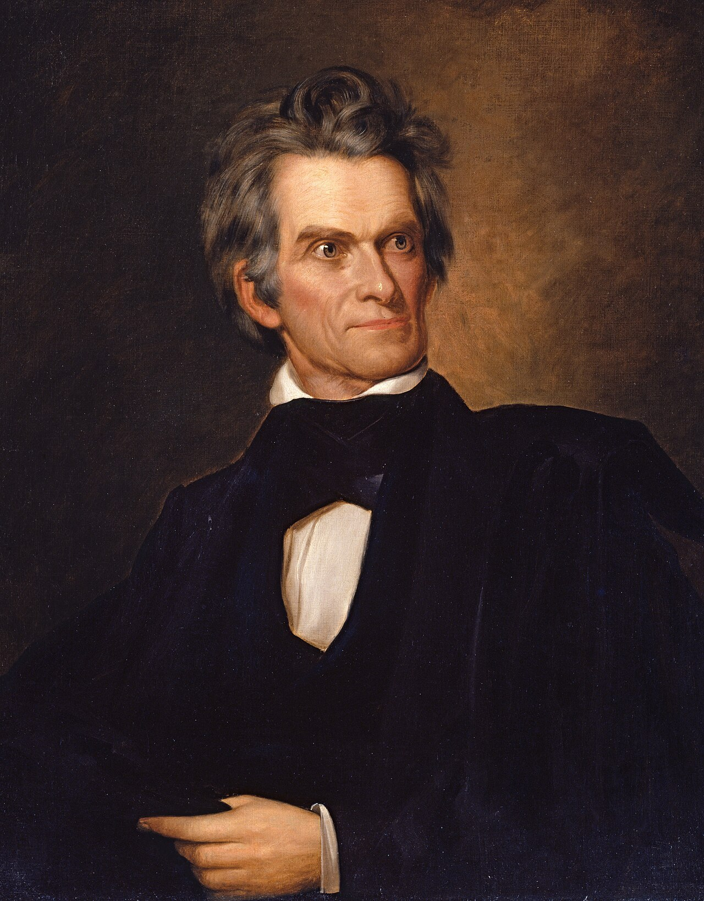
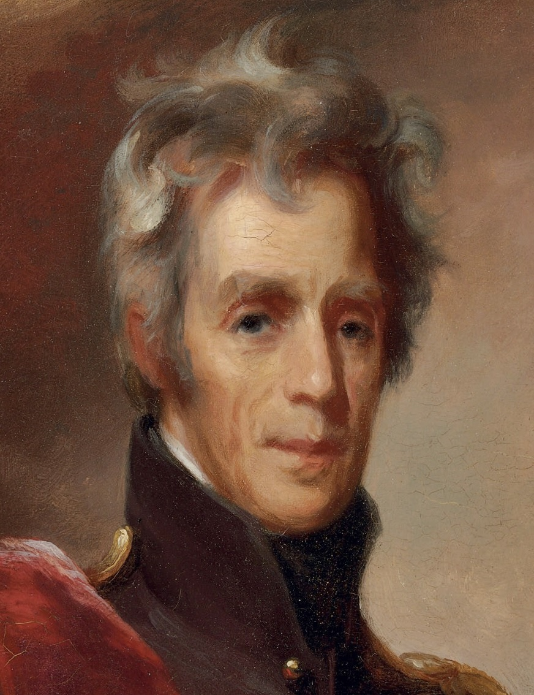
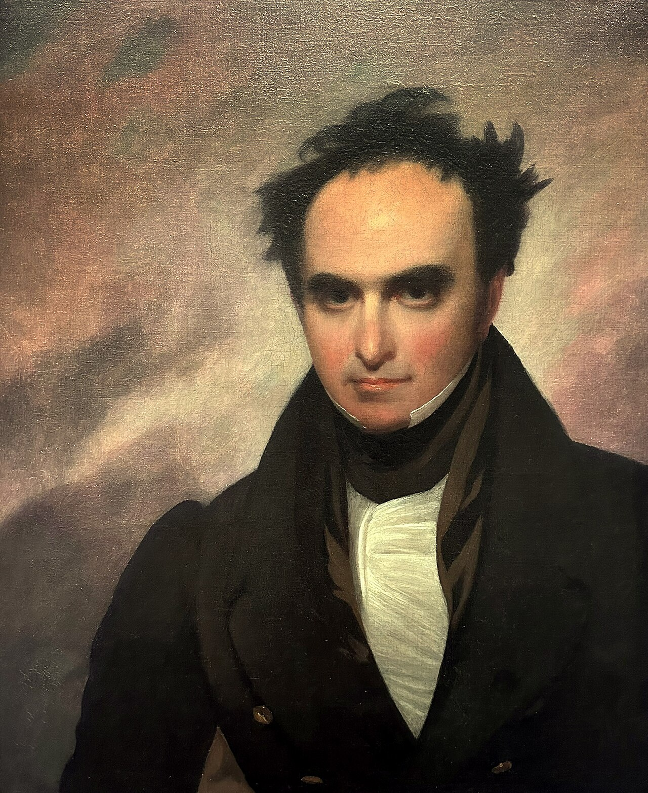
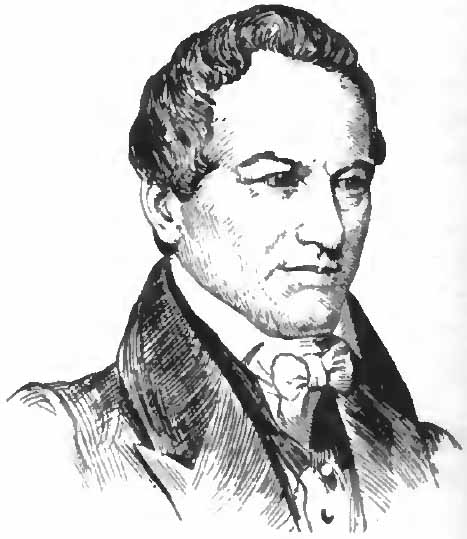

Directions: Your group has the nullification file. Each station holds one record from the crisis of 1828 to 1833. For every record, state what claim it makes about who judges the Constitution. Work through the five stations in order, then deliver the closing verdict in Part 2.
Source: South Carolina Legislature (written by John C. Calhoun), South Carolina Exposition and Protest, 1828 (Wikisource). Audited TPSP bank record, south-carolina-exposition-and-protest-1828. Cuts are marked with ellipses.
The Committee have bestowed on the subject referred to them, the deliberate attention which its importance merits; and the result, on full investigation is, an unanimous opinion, that the Act of Congress of the last session, with the whole system of legislation imposing duties on imports, not for revenue, but for the protection of one branch of industry, at the expense of others, is unconstitutional, unequal and oppressive [...]
It appears to your committee to be a plain principle, founded in common sense, illustrated by common practice, and essential to the nature of compacts, that where resort can be had to no tribunal superior to the authority of the parties, the parties themselves must be the rightful judges in the last resort, whether the bargain made has been pursued or violated. The Constitution of the United States, was formed by the sanction of the states, given by each in its sovereign capacity. [...]
The committee deem it not only the right of the state, but the duty of her representatives under the solemn sanction of an oath, to interpose if no other remedy be applied. [...] With these views the committee are solemnly of impression if the system be persevered in, after due forbearance on the part of the state, that it will be her sacred duty to interpose her veto [...] to arrest the progress of a power, which, if not arrested, must in its consequences, corrupt the public morals, and destroy the liberty of the country.

What claim does it make about who judges the Constitution: ____________________________
State the committee's verdict on the tariff system in its own words, and state the ground it gives: for what purpose, and at whose expense, does it say the duties were imposed?
The passage argues from the nature of compacts. State the principle it lays down about parties who have no tribunal above them, and state what the committee says a state must do, as a duty and not only a right, when no other remedy is applied.
Source: South Carolina Convention, Ordinance of Nullification, 1832 (Paul Leicester Ford, ed., The Federalist, 1898; via the Yale Avalon Project; capitalization modernized). Audited TPSP bank record, south-carolina-nullification-1832. Cuts are marked with ellipses.
[...] We, therefore, the people of the State of South Carolina, in Convention assembled, do declare and ordain [...] that the several acts and parts of acts of the Congress of the United States, purporting to be laws for the imposing of duties and imposts on the importation of foreign commodities, and now having actual operation and effect within the United States, and, more especially, an act entitled "An act in alteration of the several acts imposing duties on imports," approved on the nineteenth day of May, one thousand eight hundred and twenty-eight and also an act entitled "An act to alter and amend the several acts imposing duties on imports," approved on the fourteenth day of July, one thousand eight hundred and thirty-two, are unauthorized by the Constitution of the United States, and violate the true meaning and intent thereof and are null, void, and no law, nor binding upon this State, its officers or citizens. [...] And it shall be the duty of the Legislature to adopt such measures and pass such acts as may be necessary to give full effect to this Ordinance, and to prevent the enforcement and arrest the operation of the said acts and parts of acts of the Congress of the United States within the limits of this State. [...]
What claim does it make about who judges the Constitution: ____________________________
Name the two tariff acts the ordinance singles out by their dates of approval, and state the three words it uses to declare what they are inside South Carolina.
The ordinance orders the state legislature to act. State what the legislature must give full effect to, and what it must prevent and arrest, and state whose officers the ordinance says the tariff acts do not bind.
Source: Andrew Jackson, Proclamation Regarding Nullification, December 10, 1832 (Avalon Project, Yale Law School; from James D. Richardson, A Compilation of the Messages and Papers of the Presidents). Cuts are marked with ellipses.
The ordinance is founded [...] on the strange position that any one State may not only declare an act of Congress void, but prohibit its execution [...] It is true they add, that to justify this abrogation of a law, it must be palpably contrary to the Constitution, but it is evident, that to give the right of resisting laws of that description, coupled with the uncontrolled right to decide what laws deserve that character, is to give the power of resisting all laws. [...]
I consider, then, the power to annul a law of the United States, assumed by one State, incompatible with the existence of the Union, contradicted expressly by the letter of the Constitution, unauthorized by its spirit, inconsistent with every principle on which It was founded, and destructive of the great object for which it was formed.
The Constitution of the United States, then, forms a government, not a league, and whether it be formed by compact between the States, or in any other manner, its character is the same. It is a government in which all the people are represented, which operates directly on the people individually, not upon the States [...]

What claim does it make about who judges the Constitution: ____________________________
State Jackson's objection to letting a state decide for itself which laws are palpably unconstitutional. What power does he say that uncontrolled right amounts to, in his own words?
Jackson concedes the compact question for the sake of argument and answers it anyway. State what he says the Constitution forms, and state on whom he says that government operates.
Source: Daniel Webster, Second Reply to Hayne, January 26 and 27, 1830 (The Papers of Daniel Webster: Speeches and Formal Writings, vol. 1, ed. Charles M. Wiltse, University Press of New England, 1986). The passages below are quoted from that edition's published text of the speech.
It is, Sir, the people's Constitution, the people's government, made for the people, made by the people, and answerable to the people.
Liberty and Union, now and forever, one and inseparable.

What claim does it make about who judges the Constitution: ____________________________
Set Webster's first sentence against the Exposition at Station 1. The Exposition says the Constitution was formed by the sanction of the states, each in its sovereign capacity. State who Webster says made the Constitution and the government, and state what that difference does to a state's claim to judge federal law.
Webster's closing line was recited by schoolchildren for a century. State the two things it joins, the order he puts them in, and why the order itself was an answer to Calhoun's toast at the Jefferson Day dinner.
Source: John C. Calhoun, Fort Hill Address, July 26, 1831 (The Works of John C. Calhoun: Reports and Public Letters, ed. Richard K. Crallé, D. Appleton, 1856; transcription by Teaching American History). Cuts are marked with ellipses.
[...] This right of interposition, thus solemnly asserted by the state of Virginia, be it called what it may, state-right, veto, nullification, or by any other name, I conceive to be the fundamental principle of our system [...]
The utmost extent, then, of the power is that a state, acting in its sovereign capacity as one of the parties to the constitutional compact, may compel the Government, created by that compact, to submit a question touching its infraction, to the parties, who created it [...]

What claim does it make about who judges the Constitution: ____________________________
Calhoun lists four names for the same right. List them, and state what he calls the right in the system, and why his indifference to the name strengthens rather than weakens his claim.
State the utmost extent of the power as Calhoun defines it here. Who is compelled, who must the question be submitted to, and what does that limit admit about what a single state cannot do by itself?
Answer the lesson question from the file as a whole. Could a state veto the Union, and what made South Carolina back down? Your verdict must use at least three stations, must state the strongest version of the side you reject before you reject it, and must end by naming the one cause, force, compromise, or isolation, that you judge did the decisive work in March 1833.
Station 1. The committee holds the tariff system unconstitutional, unequal, and oppressive: duties imposed not for revenue but for the protection of one branch of industry at the expense of others. Its compact principle is that where no tribunal stands superior to the parties, the parties themselves are the rightful judges in the last resort of whether the bargain has been kept. Interposition is a duty under oath, not only a right, ending in a state veto that arrests the law's progress inside the state.
Station 2. The singled out acts are the tariff act approved May 19, 1828, and the act approved July 14, 1832. The ordinance declares them null, void, and no law. The legislature must give full effect to the ordinance and prevent and arrest the operation of the tariff acts inside the state, and the acts bind neither the state, its officers, nor its citizens.
Station 3. Jackson answers that an uncontrolled state right to decide which laws are palpably unconstitutional is, in his words, the power of resisting all laws, because there is no appeal from the state's own decision. Whatever its origin, the Constitution forms a government, not a league, and it operates directly on the people individually, not upon the states.
Station 4. Webster makes the whole people the author: the people's Constitution and the people's government, made for, made by, and answerable to the people. A state is then an agent inside that government, not a party standing outside it, and its claim to judge federal law for itself collapses. His closing joins liberty first in the phrase but inseparable from union, now and forever, one and inseparable; against Calhoun's toast, which placed the Union next to liberty, Webster refuses any ranking that could later be used to put liberty first and union second.
Station 5. The four names are state-right, veto, nullification, and interposition, and Calhoun calls the right the fundamental principle of the system; the name cannot be argued away because the claim rests on the structure of the compact, not on a word. Its utmost extent is to compel the federal government to submit the disputed question to the states that created it. That limit admits a single state cannot settle the question alone: three fourths of the states, by amendment, can overrule it.
Closing verdict. Full credit verdicts state the rejected side at its strongest first: on the compact reading, ratified by sovereign states with no common judge, a state veto that only forces an amendment question is a remedy inside the Union, and Calhoun's Fort Hill limit concedes the states together remain supreme. Verdicts then judge the record of 1833: no state joined South Carolina, the president denied the doctrine outright and Congress armed him to collect the duties, and the state repealed its ordinance only when the compromise tariff gave it falling duties to carry home. Credit any ranking of force, compromise, and isolation that the student defends from three stations; the strongest verdicts note that the doctrine was never surrendered by its authors, only postponed by them.